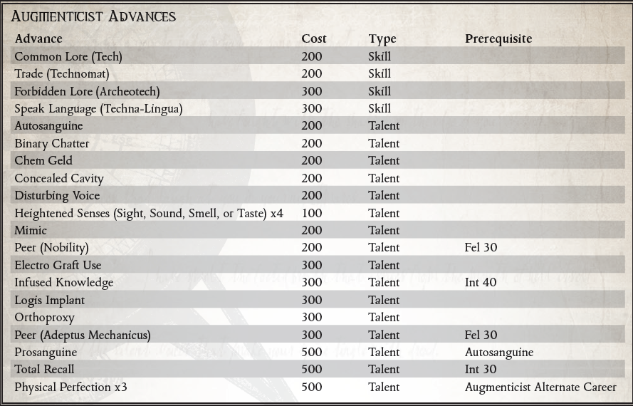

“你的肉体是功利的，功能很粗糙。但是像我这样由塑料、金属丝和钢制成的身体，是效率和优雅的奇迹。它让我变得比人类更重要。我是活生生的艺术作品！”
- 塞菲亚·特雷尔夫人，Axiom Imperial 的上尉
增强植入物在整个帝国中无处不在。从帝国卫队退伍军人的假肢，到古代学者的延长生命的血液执行器，再到机械神教的多关节机械枝，很难找到一个文明世界的居民不运动某种形式的运动。仿生植入物。在帝国社会的上层阶级中，金钱可以自由地为地位和时尚服务，贵族的后裔像孔雀一样昂首阔步，展示着盘绕的金属丝和带肋的导气管。但对一些人来说，仿生改造不仅仅是地位、年龄或对 Omnissiah 的忠诚的标志。对一些人来说，这是一种痴迷。对于这少数被称为增强论者的人来说，没有比身体和审美完美更伟大的目标了。增强学家认为，正是通过重复的仿生手术，才能实现这样的目标。
成为增强师的原因与增强师本身一样多。一位年迈的仆人，在狂热的奉献精神的驱使下，一个一个地更换他衰竭的器官，以免他死后留下一些未完成的任务。然而，一个拥有非凡技能的战士对人体的极限感到沮丧，为了成为死亡的化身，他反复进行肌肉移植和植入更致命的武器。华丽的商人王子是青春和美丽的奴隶，他一次又一次地将自己置于外科医生的刀下，直到他获得了雕像般的魅力和对即使是最奇异的麻醉品的非人容忍。不久之后，这些新兴的增强论者就过了不归路，以各种方式推理，他们作为机械完美的生物比粗野丑陋的肉体更好。当他们追求他们的物理理想时，许多增强学家自豪地宣布他们对肉体的蔑视，欣喜若狂地展示每一个新的植入物，每一个移植物都让他们比 ruck 和 run 或人性更进一步。其他人则将他们日益人工化的身体隐藏在会心的微笑和量身定制的长袍后面，满足于对自己身体优势的了解。然而，增强师的痴迷很少会在物质领域结束。他们认为，头脑是什么，但又是一个需要改进或替代的器官？
Cult Mechanicus 以与评估所有事物相同的冷酷逻辑看待增广师。大多数技术神父都称赞这位新兴的增强术士认识到肉体的局限性，并朝着机器神的“真正肉体”迈出了一步。不幸的是，由于越来越自私的原因，增强师被植入了越来越复杂的设备，机械修会开始将他视为一个恋物癖的涉猎者，一个滥用他的身体和注入它的神圣技术的人。保持对机械教派的尊重需要一位举止不凡和献身精神的增强师。就他们而言，增强论者倾向于将技术牧师视为被丑陋的控制论压倒的顽固的教条主义者。
尽管有不同的意见，但个人增强师和机器神的仆从之间已经建立了许多联盟。众所周知，增强师 Rogue Traders 会护送探索特遣队深入荒野空间，希望成为第一个受益于任何可能重新发现的仿生技术的人。在寻找最稀有和最有效的植入物的过程中，增强师经常接触到异端派系和被禁技术的制造者。报告此类团体的增强师很快赢得了机械教的尊重和感激，经常成为机械教派和宗教裁判所的常规线人。
随着增强主义者的发展，他们发现自己越来越熟悉机器的运作方式，而在有血有肉的生物中变得越来越不自在。他们大部分时间都在私下度过，调整他们的植入物并抛光暴露的金属，只是为了寻找新的控制论技术并参与最能让他们展示其不真实形式的社交活动。一些增强学家开始鄙视那些没有仿生学的人，用仆人和增强的学者代替仆人和船员。对于真正的增强论者来说，这种孤立只是为身体的完美和钢铁的不朽付出的很小的代价。
当探索者第一次意识到他的仿生修改的真正潜力时，增强主义者的道路就开始了。这个时刻可能会在探索者第一次使用控制论手臂完成一项超越任何凡人野兽极限的力量壮举时到来。这可能是他第一次被植入的思考引擎中涌现的大量数据淹没。或者，当他因螺旋钻植入物所赋予的增强感觉而欣喜若狂时，它可能会到来。无论如何，Explorer 很快就被迷住了，他的目标是放弃肉体的限制，拥抱机器的潜力。
所需职业：除探索者、传教士、兽人和克鲁特之外的任何职业。
替代等级：2 或更高 (7,000 xp)
其他要求：当采集此替代等级时，探险家必须至少有1个仿生置换肢和1个植入系统。此外，他可能没有质量差的控制论设备，并且至少一个植入物必须是最好的工艺。
身体上的完美（天赋）
先决条件：增强师替代职业 类似于探索者天赋 肉体虚弱（参见 ROGUE TRADER 核心规则手册第 107 页），增强师的身体已被修改到几乎完全机械化的程度。该天赋赋予探险者一级机器特性。该天赋最多只能使用 3 次，每次额外获得 1 级机械特性。此外，探索者的伤口可以用技术使用技能代替 Medicae 来治愈。然而，由于附加功能的深奥性质，除了任何其他修改器之外，任何技术使用测试都会受到 –20 的惩罚。
